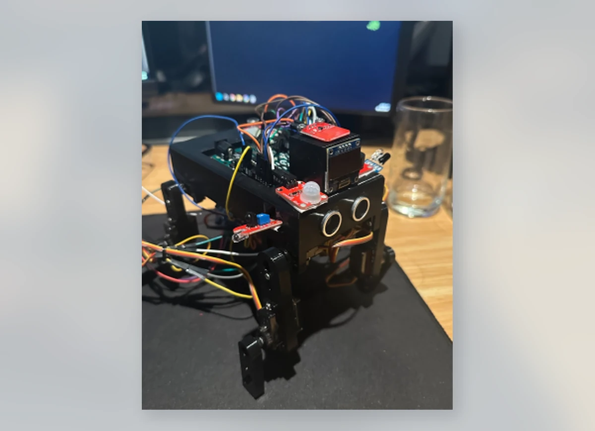

PROJECT 01 / 07ROBOTICS / EMBEDDED SYSTEMS
Quadruped Robot — Version 2.
I redesigned my first walking robot into an eight-servo quadruped with independently controlled hip and knee joints. An ESP32-C3 coordinates the gait, while onboard sensing provides a platform for obstacle detection and future autonomous behaviours.
THE CHALLENGE
Coordinate two joints per leg while keeping the chassis and electronics practical to assemble, calibrate and debug.
WHAT I DID
Developed multi-servo gait sequences, calibrated servo centres and travel limits, and refined power distribution and cable routing.
THE OUTCOME
Assembled a more capable second-version platform with greater control over foot placement, body motion and future sensor experiments.
